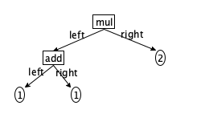
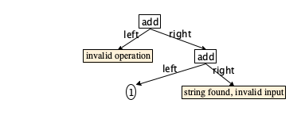
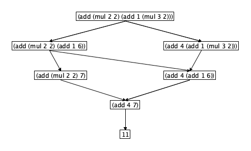
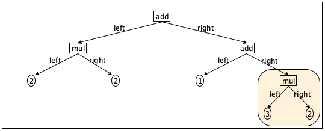
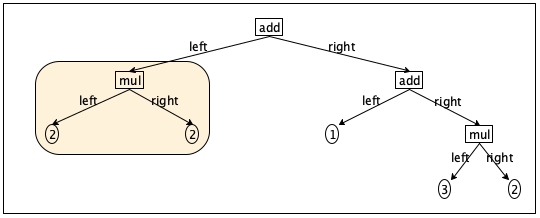
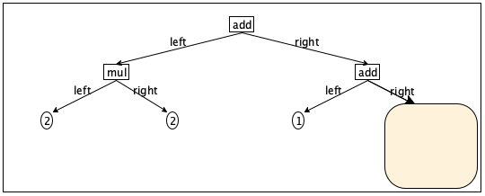
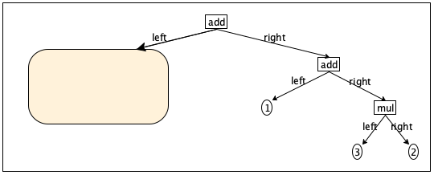

2 Arithmetic, Your First Programming Language
In the beginning, computer people saw programming as a generalization of arithmetic. They perceived computers as vast and extremely fast calculators. And to this day, every full-fledged programming language contains a language for stating arithmetic computations.
Arguably, your first experience in formal programming concerned arithmetic. Your teacher taught you adding, subtracting, multiplying, and dividing numbers and a notation for stating such calculations. Then your teacher assigned you lots of homework assignments, and you calculated. Your teacher programmed, and you played the role of the computer.
This chapter uses the simple programming langauge of arithmtic—
2.1 The Syntax and Abstract Syntax of Arithmetic
A JSON representation of nested arithmetic expressions uses |
- numbers as literal constants |
- JSON arrays of the form [X, "+", Y] |
where X and Y are JSON representations of arithmetic expressions. |
- JSON arrays of the form [X, "*", Y] |
where X and Y are JSON representations of arithmetic expressions. |
If you also want to generalize the program from Prologue that computes the value of such an expression, you might be tempted to add a line to description of the internal data representation and another one in the definition of sum. There is a first problem, however. Prologue comes with the implicit promise that the input is perfectly formed, and this promise is simply unrealistic in the world of programming languages. Programmers make mistakes, and a programming language must deal with it.
[12 34 "+" 56] |
Technically, the JSON reader encounters a sequence of characters: "[", "1", "2", " ", "3", "4", and so on. Its first task is to recognize the words: the left bracket, the 12, the 34, the string "+" all the way to the end.
[list 12 34 "+" 56]
(+ 1 1)
1 1 +
Abstract Syntax To address these two problems, the programming language world has developed the notion of abstract syntax and parsing. Roughly speaking, abstract syntax is an internal data representation of programming text. It is called abstract because it hides the concrete notation, and indeed, several different concrete representations. It is syntax because it still resembles program notation.
struct add [left,right] // a structure with two fields: struct mul [left,right] // left and right
Concrete Syntax | |||
Abstract Syntax | JSON | Racket | calculator |
add[1,1] | [1,"+",1] | (+ 1 1) | 1 1 + |
mul[2,2] | [2,"*",2] | (* 2 2) | 2 2 * |
mul[add[1,1],2] | [[1,"+",1],"*",2] | (* (+ 1 1) 2) | 1 1 + 2 * |

An abstract syntax tree for arithmetic (AST-arithmetic) is one of: |
- a number |
- add[l,r] |
- mul[l,r] |
where l and r belong to AST-arithmetic. |
AST-arithmetic = |
Number |
| add[AST-arithmetic,AST-arithmetic] |
| mul[AST-arithmetic,AST-arithmetic] |
Exercise 5. Represent [13,"+",[[1,"*",1],"+",72]] with abstract syntax.
Exercise 6. Render the abstract syntax add[mul[add[2,mul[1,3]],8],9] in our chosen JSON syntax, Racket, and the calculator notation.
Exercise 7. Draw the trees for the AST-arithmetic structures in exercise 6.
Parsing A JSON reader turns text into data. A parser performs two tasks for this data. First, it checks that the data is an arithmetic expression in the sense of the definition at the beginning of this chapter. Second, as it checks, it constructs an abstract syntax tree. To deal with errors, the target data structure is an expanded notion of AST:
struct err [message] |
|
Number |
| err[String] |
numbers
strings
arrays of JOSN
objects of JSON
// JSON-Data --> AST-arithmetic/error
def parser(jd)
case jd is a
number -> return jd
string -> return err["string found, invalid input"]
array -> if ( length of jd is not 3 )
record the occurrence of an error in a ``log''
return err[array of wrong length found, invalid input]
else
if ( the second element of jd is "+" )
return add[parser[jd[1]],parser[jd[3]]]
if ( the second element of jd is "*" )
return mul[parser[jd[1]],parser[jd[3]]]
else
return err["invalid operation"]
object -> err["object found, invalid input"]
Let’s take a look at each case in turn. In the case of numbers and strings, the answer is clear. A number by itself is already an AST. This corresponds to the first clause of the arithmetic grammar. A string is a syntax error.
Not all JSON arrays are valid; only those that contain exactly three elements. Furthermore, the middle element must be either "+" or "*". In all other cases, the parser may report a syntax error.
Finally, JSON objects are guaranteed to be illegal input.
In no case does the parser signal an error, though. Instead the parser returns an err structure with an appropriate error message. Thus, if a program contains several syntax errors, the parser can report many or even all of them to IDE, which, in turn, can mark them up appropriately. A programmer can then take actions on several mistakes at once.
Consider the JSON input on the left below:
[[4, "/", 2],
"+",
[1, "+",
"hello world"]]

If the parser is able to construct an AST-arithmetic instead of an AST-arithmetic/error, the input is completely correct. Besides constructing a proper AST, its “log” also reflects the absence of errors, and a programming language implementation can from now on proceed with the knowledge that the program is grammatically correct.
JSON already forces the “programmer” to structure text into arrays.
The JSON reader delivers structured data, that is, nested trees.
A parser for this kind of data does not have to organize a stream of tokens into a tree.
Syntax errors immediately turn into a node; in reality, a parser may attempt to traverse sub-trees and discover yet more correct and incorrect pieces.
Still, the parser of figure 9 presents the very principle of parsing: the differentiation of (sub)trees into correct and incorrect pieces during the construction of an abstract syntax tree. In short, you understand the principle of parsing now, and from the perspective of programming language research, it is the principle that matters.
Syntax Doesn’t Matter While a programmer may prefer the syntax of Java over the one for JavaScript or vice versa, syntax does not matter to a programming language researcher. That is, syntax and its design aren’t principles of programming language research.
how does the language deal with the imprecision of hardware calculations compared to calculations in pure arithmetic?
does the language include numeric constants independent of the underlying hardware?
does the language permit calculations with the square root of negative numbers?
Historically, people began to understand that, like a natural language, a
programming language comes with a vocabulary and a grammar. They then borrowed
ideas from linguists to write down descriptions of all tokens in a language and
all grammatically correct phrases. By the late 1960s, developers figured out
that the process of going from such descriptions to the implementation made up a
common pattern—
Remember this idea next time you write a program that consumes textual data. Software developers uses these descriptions as guides to coding up lexers and parsers, not just for language-processing programs but for any program that consumes complex forms of textual data representation. Then they use the tools of compiler construction to generate readers and parsers and probably never look at the actual code.
Exercises The following exercises aim to deepen your understanding of JSON reading in your chosen language When using this book for such exercises in a course, we have found it useful to impose restrictions on JSON inputs. See JSON: Simplicity and Complexity for details. and, more importantly, of parsing as explained above. Exercises in subsequent chapters build on solutions to some of these exercises.
Exercise 8. Implement a program that reads and parses the language of Arithmetic in your chosen programming language.
Add subtraction and division to the language of Arithmetic and modify your solution to accommodate those.
Exercise 9. Abstract syntax truly hides the irrelevant parts of concrete, textual syntax
A S-expression representation of nested arithmetic expressions uses |
- numbers as literal constants |
- S-expressions of the form [+ X Y] |
where X and Y are S-expression representations of arithmetic expressions. |
- S-expression representations of the form [* X Y] |
where X and Y are S-expression representations of arithmetic expressions. |
Implement a program that reads and parses the S-expression syntax of Arithmetic in your chosen programming language. The program should use the same AST representation as the one you implemented for exercise 8.
The Rosetta Code repository has readers for S-expressions for a large variety of programming languages.
Exercise 10. Programming languages come with more than arithmetic for numbers. They typically also include an arithmetic of booleans, characters, strings, and other values.
A JSON representation of String Arithmetic uses |
- strings as literal constants |
- JSON arrays of the form [X, "append", Y] |
where X and Y are JSON representation of String Arithmetic. |
- JSON arrays of the form [X, "substring", N, M] |
where X is a JSON representation of String Arithmetic |
and N and M are natural numbers (non-negative integers). |
Exercise 11. Having fixed numbers to specify a substring operation is limiting. Real programming languages permit expressions in such positions that evaluate to numbers.
A JSON representation of Number Arithmetic uses |
- numbers as literal constants |
- JSON arrays of the form [X, "+", Y] |
where X and Y are JSON representation of Number Arithmetic. |
- JSON arrays of the form [X, "*", Y] |
where X and Y are JSON representation of Number Arithmetic. |
|
A JSON representation of String Arithmetic uses |
- strings as literal constants |
- JSON arrays of the form [X, "append", Y] |
where X and Y are JSON representation of String Arithmetic. |
- JSON arrays of the form [X, "substring", N, M] |
where X is a JSON representation of String Arithmetic |
and N and M are JSON representations of Number Arithmetic. |
The grammar consists two productions: one for Number Arithmetic and one for String Arithmetic. Furthermore, the second one refers to the first. This arrangement implies that your program needs two parsing functions: one for the Number Arithmetic and one for the String Arithmetic production. Because of the reference from the second to the first production, the second parser must refer to the first in the corresponding position. Finally, the specification says that the program is to find a String Arithmetic program, so the second parser is the primary one from this perspective.
Hint Remember that a parser program merely constructs an AST. It thus cannot check whether the numeric expressions in the "substring" operation denote natural numbers.
Note This arrangement is artificial. A programming-language grammar usually does not separate productions for Strings and Numbers in this way. The point of the exercise is to deepen your understanding of parsing programs and how mutual recursion works.
2.2 An Interpreter for Arithmetic
To a student in a mathematics course—
the value of a number is the number itself;
the value of an add is the addition of the values of the two operands; and
the value of an mul is the multiplication of the values of the two operands.
// AST-arithmetic --> Number
def interpreter(ast)
case ast is a
number -> return ast
add[l,r] -> return interpreter[l] + interpreter[r]
mul[l,r] -> return interpreter[l] * interpreter[r]
Figure 10 turns this reasoning into a code sketch. The three conditional lines correspond to the three listed cases. In the second and third case, the code sketch uses a pattern notation that says ast is a structure of type add or mul, respectively, and the values in the two fields are named l and r for the rest of the case. To the right of the arrow, then, the calls to interpreter recur on the two field values, respectively. And the values are combined with the appropriate operators.
Anyone with a modicum of programming experiences knows, however, that computers usually don’t calculate like human mathematics students. People with some more experience than a beginner have also encountered differences among different programming languages.
Partly, these differences are due to hardware. Most programming languages use
the underlying hardware to interpret Integers and Reals. So, for example, the
Integers available for computations have to fit into a 63 bit word, which may
cause the addition of two positive numbers to yield a negative
one. Mathematicians know how to cope with this problem easily, and good
programmers watch out for them. When it comes to Reals. hardware is a truly
impoverished medium. It is plain impossible to represent many Reals in hardware,
and we cannot describe these gaps easily as in the case of Integers. As a
result, computing with Reals injects incredibly difficult to predict
imprecision.For an accessible introduction—
Partly, these differences are due to choices that language designers make. Some
languages offer a rather limited choice of numbers. JavaScript (especially early
variants) come to mind. Others attempt to facilitate mathematical computations
with expressive number representations, going from small byte-sized numbers over
exact Rationals to Complex numbers (and beyond). The Scheme programming language
is a representative of this family, and Racket inherits its number system. In
this world, a programmer has always been able to write down arbitrarily large
Integer constants and arbitrarily precise Rational fractions. Computations with
such numbers is also one-hundred percent correct. Moving from computations with
small hardware-style Integers to very large ones or fractions is invisible to
the programmer. And that is also the problem. In this world, a programmer
typically does not pay attention to the cost of numerical computations—
If we—
as scientists— wish to understand the language of Arithmetic of an existing programming language L, the interpreter must implement an addition and a multiplication algorithm that simulates the one of L. If we—
as engineers— wish to design the language of Arithmetic of our amazing new language M, the interpreter must use an addition and a multiplication algorithm that explains exactly how programs will be able to manipulate numbers.
// AST-arithmetic --> Number
def interpreter(ast)
case ast is a
number -> return represent[ast]
add[l,r] -> return addition[interpreter[l],interpreter[r]]
mul[l,r] -> return multiplication[interpreter[l],interpreter[r]]
// Number -> (Meta)Number
// inject a numeric literal constant into the chosen number type
def represent(x)
...
// Number x Number --> Number
// implement addition for the language we wish to understand/design
def addition(n, m)
...
// Number x Number --> Number
// implement the multiplication we wish to understand/design
def multiplication(n, m)
...
Figure 11 shows a code sketch that reflects these
considerations. It introduces three auxiliary—
Exercises The goal of the following exercises is to implement complete interpreters and to understand the issues involved in your chosen language.
Exercise 12. Implement the interpreter in figure 11 in your chosen programming language. The calculations must realize precise Integer computations. Hint Every contemporary programming language comes with a “big number” package.
When you have implemented the interpreter, including a unit test suite, integrate it with the program of exercise 8.
Exercise 13. Implement an interpreter for the language of String Arithmetic introduced in exercise 10.
Ignore substring operations whose numeric arguments make no sense for the given string. Your interpreter should just implement the behavior of your implementation language in this case.
When you have implemented the interpreter, including a unit test suite, integrate it with the program of exercise 10.
Exercise 14. Implement an interpreter for the language of Mixed String and Number Arithmetic introduced in exercise 11.
Ignore substring operations whose numeric arguments make no sense for the given string. Your interpreter should just implement the behavior of your implementation language in this case.
Because the description of abstract syntax comprises two productions, your interpreter must consist of two functions. Each production takes care of three kinds of abstract syntax. The two will also be in the same mutual relationship as the data descriptions of the abstract syntax.
When you have implemented the interpreter, including a unit test suite, integrate it with the program of exercise 11.
2.3 A State Machine for Arithmetic: Non-Determinism
When a good teacher asks students to figure out the value of some arithmetic expression, it often comes with the admonition “show all the steps,” which prepares students for algebra and upper class students. So, look at this Arithmetic program: add[mul[2,2],add[1,mul[3,2]]].
add[mul[2,2],add[1,mul[3,2]]] = add[4,add[1,mul[3,2]]] = add[4,add[1,6]] = add[4,7] = 11
add[mul[2,2],add[1,mul[3,2]]] = add[mul[2,2],add[1,6]] = add[4,add[1,6]] = add[4,7] = 11
Stop! Circle the sub-expression that the various students evaluated at each line. This will drive home how the evaluations differ.
Stop again and note how these calculations have been expressed with abstract syntax. From here on, the book uses concrete JSON syntax only for exercises.

Figure 12: An Arithmetic expression and the possible ways of arriving at an answer
Traverse the abstract syntax tree with the goal of finding an add or a mul node whose two fields contain just numbers. Perform the calculation and replace the node with the result.
Figure 13 sketches how to turn this English definition into code. It is a surprisingly large function, given the short paragraph. Part of the length is due to plain coding; unlike English, code must show several ideas explicitly: how the tree is traversed, how a numeric sub-tree is reduced to a number, how the tree is reconstructed, and some more details. Also, take a close look at the “randomly choose” instruction, which occurs in both the case for add and mul. This implements the short phrase “with the goal of finding ...” when the choice is ambiguous.
// AST-arithmetic --> AST-arithmetic
def transition(ast)
case ast is a
add[l,r] -> if (both l and r are numbers)
return l + r
else if (l is a number)
return add[l,transition[r]]
else if (r is a number)
return add[transition[l],r]
else
randomly choose one of the following:
-- add[l,transition[r]]
-- add[transition[l],r]
mul[l,r] -> if (both l and r are numbers)
return l * r
else if (l is a number)
return mul[l,transition[r]]
else if (r is a number)
return mul[transition[l],r]
else
randomly choose one of the following:
-- mul[l,transition[r]]
-- mul[transition[l],r]
Figure 13: A transition function for an abstract state machine for Arithmetic
Exercise 15. Implement this transition function for the language of Arithmetic in your chosen programming language. The function does not pursue all possible possibilities but randomly chooses an alternative if there are several.
When you have implemented the transition function, including a unit test suite, design the driver function from your solution of exercise 1 to create a complete implementation of the abstract state machine for Arithmetic.
Suggestion You may wish to add an instruction to the driver to display states in the style of the calculations from above. Different runs may give you different calculations due to the random choice.
Mathematics offers superior tools for writing down transition functions. It
overlaps with computer science in that it views transitions as operating on
trees and sub-trees. Consider figure 14, which illustrates this
point of view with two tree renderings of the expression at the top of
figure 12. The highlighting points out the sub-trees—


Figure 14: The reducible expressions in the AST of figure 12
For a programming language researcher, a reduction transition is tree surgery. The first step is to find sub-trees such as those highlighted in figure 14. The second step is to prune such a redex sub-tree, that is, remove it. This step leaves us with a tree that has a hole. The last step is to fill the hole with the result of performing the specified calculation.
Figure 15 shows the result of the second step: the trees of figure 14 with holes. In this figure, the holes have the same size as the sub-tree. The arrow that points to the hole has a larger head than the others to point out that this hole is where an expression of Arithmetic can be placed.


Figure 15: The contexts of redexes in the AST of figure 12
|
{--} |
| add[C,AST-arithmetic] |
| add[AST-arithmetic,C] |
| mul[C,AST-arithmetic] |
| mul[AST-arithmetic,C] |
Stop! Clarify in your mind how this shorthand translates into a conventional data description that starts with “X is one of.”
Stop again! Convince yourself that every context contains exactly one hole.
Why are the examples from figure 15 contexts according to this grammar?
the tree at the top: topC = add[mul[2,2],add[1,{--}]] |
the tree at the bottom: botC = add[{--},add[1,mul[3,2]]] |
topC[ mul[3,2] ] |
botC[ mul[2,2] ] |
topC[ 6 ] |
botC[ 4 ] |
At this point, you may wonder how this concise table can make the random choices of the code in figure 13. The random choice is built into the definition of C, which for every structure (add, mul), permits looking for a redex in the left or the right field.
state
redex
add[mul[2,2],add[1,mul[3,2]]]
mul[2,2]
add[{--},add[1,mul[3,2]]]
add[4,add[1,mul[3,2]]]
mul[3,2]
add[4,add[1,{--}]]
add[4,add[1,6]]
add[1,6]
add[4,{--}]
add[4,7]
add[4,7]
{--}
11
final state
Exercise 16. Manually check this last claim. “Execute” the instruction in the first column. Then fill the hole of C with the value. Compare the resulting expression with the state in the row below.
state
redex
add[mul[2,2],add[1,mul[3,2]]]
mul[3,2]
add[mul[2,2],add[1,{--}]]
add[mul[2,2],add[1,6]]
mul[3,2]
add[{--},add[1,6]]
add[4,add[1,6]]
add[1,6]
add[4,{--}]
add[4,7]
add[4,7]
{--}
11
final state
When a state machine may randomly choose from several possible transitions,
computer scientists speak of a non-deterministic machine. For such
machines, we tend to figure out all possible traces for a given program. Even
though the machine may construct several different ways to get the final answer,
this one arrives at the same final answer—
Exercise 17. Re-do exercise 16 for this second trace. Check that every C can be constructed with the grammar of contexts.
2.4 A State Machine for Arithmetic: Determinism
While a non-deterministic state machine may simulate the students in a class, it does not act like hardware from the perspective of a programmer. Modern hardware doesn’t act quite like this; we ignore this point here. To them, a computer picks the next instruction to execute according to a fixed algorithm. The most common algorithm is to pick the leftmost redex in the current state of the machine. A reasonably clear alternative is to pick the rightmost one. Either way we get a deterministic state machine.
{--} |
| add[Ev,AST-arithmetic] |
| add[Number,Ev] |
| mul[Ev,AST-arithmetic] |
| mul[Number,Ev] |
In contrast to the ordinary context C, an evaluation context Ev may cannot have a hole to the right of an arbitrary expression. A hole may only show up in a place where all pieces of the immediate left are numbers. This point is a translation of the third and fifth alternative into English. By implication, the left side of the path to a hole has always been reduced to a number.
Let’s illustrate the difference with a concrete example. Take a look back at figure 15. If you follow the path from the root of the context to hole, you see that the context at the top bypasses mul[2,2], which is in the left field of the top-most add node. Hence this context is in C but not in Ev. By contrast, the context at the bottom is an evaluation context E.
current state
next state
Ev[add[k,l]]
Ev[n ]
n = k + l
Ev[mul[k,l]]
Ev[n ]
n = k * l
Figure 16: The deterministic transition function for Arithmetic
all AST-arithmetic are states;
all AST-arithmetic are initial states;
all plain numbers are final states; and
determining the result in the leftmost redex the only kind of transition between two states.
Exercises The point of the following exercises is to implement the state machines and to get a sense of what programming language calls “operational meaning” of expressions and programs. While the first exercise is about numeric Arithmetic, computer science calculates with more than numbers, and the exercises make this point, too.
Exercise 18. Take a last look at figure 12. Use a red pen to mark the path that the deterministic state machine takes through this graph.
Exercise 19. Implement the deterministic transition function for the language of Arithmetic in your chosen programming language.
When you have implemented the transition function, including a unit test suite, design the driver function from your solution of exercise 1 to create a complete implementation of the abstract state machine for Arithmetic.
Suggestion You may wish to add an instruction to the driver to display states in the style of the calculations from above.
Exercise 20. Recall the abstract syntax representation for the language of String arithmetic in exercise 10. Then derive a grammar for its evaluation contexts and use it to implement the deterministic transition function for this language of String arithmetic.
Ignore substring operations whose numeric arguments make no sense for the given string. Your interpreter should just implement the behavior of your implementation language in this case.
Exercise 21. Develop an abstract syntax representation for the language of String arithmetic in exercise 11. Then derive a grammar for its evaluation contexts and use it to implement the deterministic transition function for this language of String arithmetic.
Ignore substring operations whose numeric arguments make no sense for the given string. Your interpreter should just implement the behavior of your implementation language in this case.
2.5 A Stack Machine for Arithmetic
Like students, the abstract state machine works in mysterious ways. It finds the exact right split between redex and context in one fell swoop. It computes. It fills the context with the resulting number, and then the whole process starts over. This process may work well for small expressions in Arithmetic, but for large programs, finding the split between a redex and an evaluation context is work.
To understand what this work is, it is necessary to separate the state into two parts: the evaluation context that the machine has discovered thus far and the “code” that fills the context. By filling the context with this code, we get the actual state of the abstract machine. Once the two pieces are pulled apart, we can explain in a step-by-step fashion how the machine shifts parts of the expression from the code to the context.
Instead of immediately looking at the machine, let’s start with the running example and a slow-paced trace that explicates the incremental search for the redex:
control code
evaluation context
comment
add[mul[2,2],add[1,mul[3,2]]]
{--}
look left
mul[2,2]
add[{--},add[1,mul[3,2]]]
compute
4
add[{--},add[1,mul[3,2]]]
return
add[1,mul[3,2]]
add[4,{--}]
look right
mul[3,2]
add[4,add[1,{--}]]
compute
6
add[4,add[1,{--}]]
return
add[1,6]
add[4,{--}]
compute
7
add[4,{--}]
return
add[4,7]
{--}
compute
11
done
As stated, the configuration consists of two pieces, dubbed control
code and evaluation context. Initially the code is the entire expression, and
the context is empty. By definition of the evaluation context Ev, the
machine must first look at the left field of the top-most node, assuming it is
not in a final state. Here the left field is not a number, so the hole of
the evaluation context must be there. While the machine may thus focus on
mul[2,2], it can shift node itself plus the right field to the
evaluation context; technically it fills the existing evaluation context—
The second line presents the machine with a control code that is a redex. So, it
is time to compute. Doing so yields a state whose control code is a number. While
the machine from the preceding section would put this number into the context
and restart the process, we know that the search for the next evaluation context
would start from here anyways, with the next node up to be precise. Thus, a
number in the control code part of the state, cause the machine to look at the
surroundings of the hole in Ev and to peel off the innermost layer. Here
this layer needs an evaluation of the right field of the add node, and
thus the machine swaps the number—
When the machine sees the control code of the third line, it may focus on the right field of the add node, because the left one is already a number. This shifts add[1,{--}] into Ev’s hole.
From here the rest of the trace proceeds with steps similar to those seen before. It ends when the control code turns into a number and the Ev part is just a hole. Once again we get 11 back.
By generalizing from the example, we can get an abstract state machine that explicitly searches for the next redex. Its states consists of two pieces: the expression in which it is looking for a redex and its evaluation context. When the expression is just a number, the search failed and the machine returns to the evaluation context to search there. Technically, the return action swaps the number and a piece of the immediate surrounds of the hole.
We use the terminology register for each piece of state in a machine whose state consists of several pieces. This particular two-register machine is called CC-machine because its registers are the control-code and the context.
a state consists of two registers: a control code, which is an AST-arithmetic, and the context, which belongs to Ev;
an initial state has an expression in the control-code register and {--} in the context register;
a final state has a number in the control-code register and {--} in the context register; and
the CC-machine’s transitions are displayed in figure 17.
current state
next state
control code
evaluation context
control code
evaluation context
add[nn1,ae2]
ae2
Ev [add[nn1,{--}]]
look right
mul[nn1,ae2]
ae2
Ev [mul[nn1,{--}]]
look right
add[ae1,ae2]
ae1
Ev [add[{--},ae2]]
look left
mul[ae1,ae2]
ae1
Ev [mul[{--},ae2]]
look left
add[nn1,nn2]
nn1 + nn2
compute
mul[nn1,nn2]
nn1 * nn2
compute
nn
Ev [add[{--},ae2]]
add[nn,ae2]
return
nn
Ev [add[nn1,{--}]]
add[nn1,nn]
return
nn
Ev [mul[{--},ae2]]
mul[nn,ae2]
return
nn
Ev [mul[nn1,{--}]]
mul[nn1,nn]
return
Legend (1) ae1 is an expression that is not a number; (2) ae1 ae2 ae stand for expressions; and (3) nn1 nn2 nn stand for numbers
The first four transition rules in figure 17 are the search
rules. For each kind of node in the AST, there is one rule for searching on the
right—
Evaluation Contexts are Stacks A course on Data Structures uses the word “stack” to describe a “last in, first out” policy. The context-oriented view obscures the stack picture, and perhaps you don’t immediately see what the items are that the machine is pushing onto, and popping, from the stack. So let’s take it slowly, starting with the second aspect.
step 1 fills the hole of the empty context with add[{--},add[1,mul[3,2]]];
step 3 swaps out add[1,mul[3,2]] with add[4,{--}];
step 4 fills the hole of the resulting context with add[1,{--}] with add[4,{--}];
add[{--},AST-arithmetic] |
| add[Number,{--}] |
| mul[{--},AST-arithmetic] |
| mul[Number,{--}] |
a state consists of two registers: a control code, which is an AST-arithmetic and represents the current focus of search, plus a stack K, which represents what is left to compute when the control code has been reduced to a value;
an initial state has an expression in the control-code register and empty stack in the context register;
a final state has a number in the control-code register and an empty stack in the context register; and
the CK-machine’s transitions are displayed in figure 18.
current state
next state
control code
control stack
control code
control stack
add[nn1,ae2]
ae2
K, add[nn1,{--}]
mul[nn1,ae2]
ae2
K, mul[nn1,{--}]
add[ae1,ae2]
ae1
K, add[{--},ae2]
mul[ae1,ae2]
ae1
K, mul[{--},ae2]
add[nn1,nn2]
nn1 + nn2
mul[nn1,nn2]
nn1 * nn2
nn
K, add[{--},ae2]
add[nn,ae2]
nn
K, add[nn1,{--}]
add[nn1,nn]
nn
K, mul[{--},ae2]
mul[nn,ae2]
nn
K, mul[nn1,{--}]
mul[nn1,nn]
Legend (1) ae1 is an expression that is not a number; (2) ae1 ae2 ae stand for expressions; and (3) nn1 nn2 nn stand for numbers
Exercises This stack-based abstract state machine is one that you want to implement. For a computer scientist, it feels more concrete than the “machine that acts like a grade-school” student. They also get us closer to how real programming languages organize the execution of programs, meaning we get a more concrete sense of the meaning of programs.
While Arithmetic looks so simple that you may question why we spend so much energy on it, these exercises also prepare you for the introduction of functions and objects.
Exercise 22. Implement the transition function from figure 18 for the language of Arithmetic in your chosen programming language.
When you have implemented the transition function, including a unit test suite, design the driver function from your solution of exercise 1 to create a complete implementation of the abstract state machine for Arithmetic.
Suggestion You may wish to add an instruction to the driver to display states in the style of the calculations from above.
Exercise 23. Derive a stack representation for the String arithmetic language o of exercise 10. Use it to implement the deterministic transition function for this language of String arithmetic.
Ignore substring operations whose numeric arguments make no sense for the given string. Your interpreter should just implement the behavior of your implementation language in this case.
Exercise 24. Develop an abstract syntax representation for the language of String arithmetic in exercise 11. Then derive a stack representation and use it to implement the deterministic transition function for this language of String arithmetic.
Ignore substring operations whose numeric arguments make no sense for the given string. Your interpreter should just implement the behavior of your implementation language in this case.
2.5.1 The Names of Machines: C, CC, CK
“the machine that acts like a student” is the (non-)deterministic C machine;
by splitting the state into a control-code and a context register, we get the CC machine; and
replacing the evaluation context with a stack yields the CK machine.
2.6 Division
You may have wondered why Arithmetic is so simplistic. It doesn’t even include subtraction and multiplication. The problem is division, because it is not a function that always returns a result; not even mathematicians know the result of 1/0.
So unlike addition and multiplication, division isn’t just a computing
instruction. For the former, and subtraction too, a reduction merely appeals to
mathematics (or a programming language form of mathematics) to compute the
result—
struct sub [left,right] struct div [left,right]
Number |
| add[AST-f-arithmetic,AST-f-arithmetic] |
| mul[AST-f-arithmetic,AST-f-arithmetic] |
| sub[AST-f-arithmetic,AST-f-arithmetic] |
| div[AST-f-arithmetic,AST-f-arithmetic] |
a state consists of two registers: a control code, which is an AST-f-arithmetic, and a stack K;
an initial state has an expression in the control-code register and empty stack in the context register;
a final state has a number in the control-code register or the marker division-by-0 and an empty stack in the context register; and
figure 19 displays the machine’s transitions for division.
current state
next state
control code
control stack
control code
control stack
div[nn1,ae2]
ae2
K, div[nn1,{--}]
add[ae1,ae2]
ae1
K, div[{--},ae2]
div[nn1,nn2]
nn1 / nn2
if nn2 != 0:
div[nn1,0]
division-by-0
nn
K, div[{--},ae2]
div[nn,ae2]
nn
K, div[nn1,{--}]
div[nn1,nn]
Legend (1) ae1 is an expression that is not a number; (2) ae1 ae2 ae stand for expressions; and (3) nn1 nn2 nn stand for numbers
Figure 19: A control-code/stack machine for Arithmetic with division
The key observation is that the second computation rule for division not only places a non-numeric result into the control-code register, it also leaves the stack register empty. In principle, the CC-machine can also be equipped with this kind of transition, though only the deterministic one. If the error message were to include the other argument to the division function, the non-deterministic one may come to different results, depending on the different random choices it may make.
Exercise The following exercises combine a bit of machine-design work
with implementation exercises that help you gain a precise understanding of how
the CK-machine for AST-f-arithmetic deals with exceptions in a way that
is compatible with programming free of side effects. Concretely, it explains
exceptions in the language we study—
Exercise 25. Develop the transition rules for subtraction.
Exercise 26. Implement the transition function from figure 19 for AST-f-arithmetic in your chosen programming language. You need to solve exercise 25 first.
When you have implemented the transition function, including a unit test suite, design the driver function from your solution of exercise 1 to create a complete implementation of the abstract state machine for Arithmetic.
Exercise 27. Revise the abstract state machine from exercise 23 so it deals with bad substring operations via exceptions independently of your implementation language. Specifically, it raises the exception bad-substring-operation.
Exercise 28. Develop an abstract syntax representation for the language of String arithmetic in exercise 11. Then derive a stack representation and use it to implement the deterministic transition function for this language of String arithmetic.
2.7 Theorems
All the exercises treat the machine transition as blueprints for implementing a physical artifact, a piece of software that moves bits on real hardware. For a programmer, this point of view is natural. For a programming language researcher, there is a second, equally important perspective, however. The transitions specific mathematical relations between states. What we need, though, is a relation that determines the answers of complete programs.
evaluator : AST –> Answer
This mathematical perspective is useful because researchers wish to prove that a language blueprint makes guarantees for all programs. While the tables of transitions already just state relations, the driver looks like an ordinary program and not at all like a mathematical function. Fortunately, one bit of knowledge from a course on Discrete Mathematics suffices here: transitive-reflexive closures.
the objects are evaluators and similar functions;
the domains are elements of programming languages and their implementations; and
the properties are stated as relationships among evalutors or between evaluators and objects.
name
domain
range
Number
Number
Number
Number, division-by-0
Number, division-by-0
Number, division-by-0
If you recall your discrete mathematics, though, the transitive-reflexive closure of a relation is not necessarily a function. So the very first theorem should affirm the nature of these relations as functions and thus as proper evaluators.
Basic Theorem The relations c-arith, cc-arith, and ck-arith are mathematical functions on their specified domain and range.
Recall that a function is a relation that for a given input from the domain produces at most one output from the range. In this particular case, the three functions always produce exactly one result. Programming languages even has a special name for this theorem.
Strong Evaluation Theorem The evaluators c-arith, cc-arith, and ck-arith are total on their specified domain.
The final theorem illustrates a property between evaluators. The very
existence of several evaluators raises the question whether they produce the
same answer for all possible programs in this domain. Given that ck-arith
is based on a more concrete machinery than, say, c-arith, programming
language researchers speak of “correctness theorems” in this context. They
consider c-arith as the easy-to-comprehend—
A simpler way of stating the same property is: c-arith = cc-arith = ck-arith.
In mathematics, a theorem comes with a proof, a chain of stylized (formal)
arguments from first principles—
This book does not present proofs, because we, the authors, do not consider proofs appropriate material for a first course on the principles of programming languages. At the same time, the book states theorems that make sense given the systematic construction of the functions, like for the correctness theorem.
a theorem in programming language makes a statement about the theoretical part of the programming language, not its physical one.
if your implementation translates the transition functions correctly into code,
if the compiler for your chosen language correctly translates your code to the hardware’s language,
if the hardware functions according to its specification, and
if no power outages or cosmic rays or some other natural phenomenon messes with the physics of the program,
Exercise 29. State a theorem like the one above for c-arith-f, cc-arith-f, and ck-arith-f. To do so properly, you need to make sure to construct transition tables like those for the evaluators of the theorem.
2.8 Summary
Who would have thought that working through the principles of Arithmetic could teach so much about the work of programming language researchers.
The syntax that programmers use is a matter of taste. Programming language research does not study taste; it focuses on ideas. Hence, people use abstract syntax (trees) to hide different syntax representations of the same idea.
Plain arithmetic, the kernel of basically every major programming language, has a relative plain meaning: a number, a string, a boolean value, and so on. This chapter shows that the mechanical calculations learned in grade school explain how to get the meaning of expressions. Programmers can use this idea to think about code.
It also shows that two alternative ways of determining the meaning: (1) an machine that stepping from one program to another in a deterministic fashion and (2) a stack machine that separates the control code from the rest of the computation, represented as a stack. The first one is good for programmers, the second one is closer to how an actual language implementation computes.
A JSON representation of nested arithmetic expressions uses |
- Number |
- JSON arrays of the form [X, "+", Y] |
- "true" |
- "false" |
- JSON arrays of the form ["if", X, Y, Z] |
- JSON arrays of the form [X, ">", Y] |
Numbers stand for themselves, while "true" and "false" represent Booleans. Addition works as always. An if arrays picks Y if X evaluates to true, Z otherwise. The last array denotes the usual numeric comparison.
"syntax error" if the JSON text is not formed according to the grammar;
"run-time error" if the program gets stuck because of an ill-defined redex; or
a JSON number if the syntax is correct and everything evaluates correctly.
Develop an abstract syntax representation and document it. Also explain which interpretation method you choose and why: interpretation, a C-machine, a CC-machine, or a CK-machine.